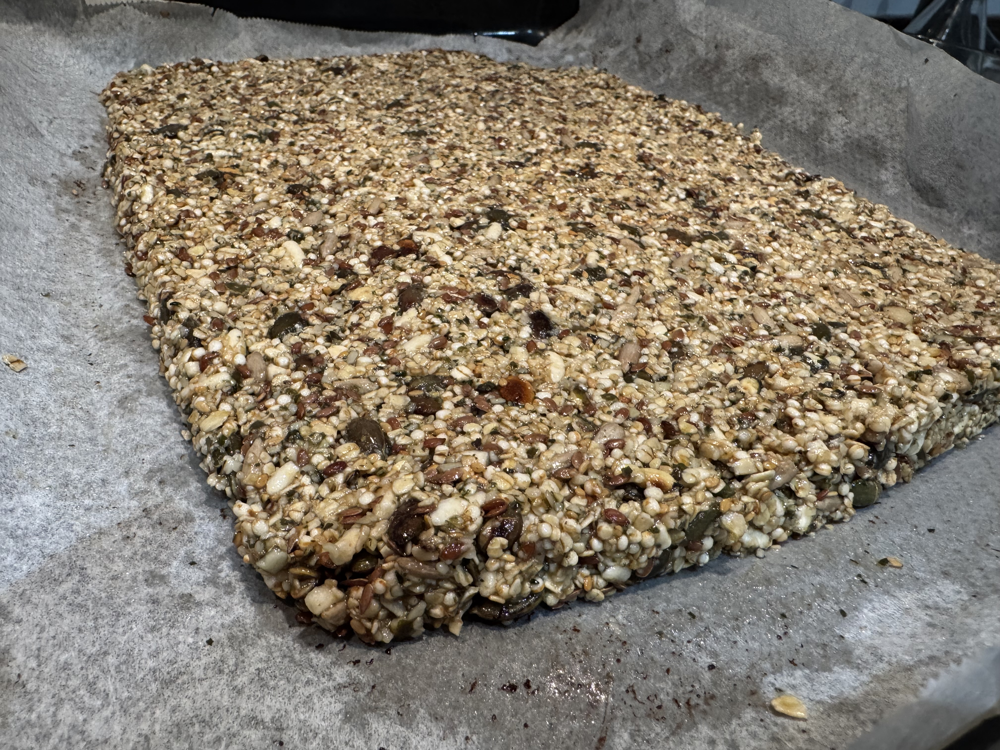
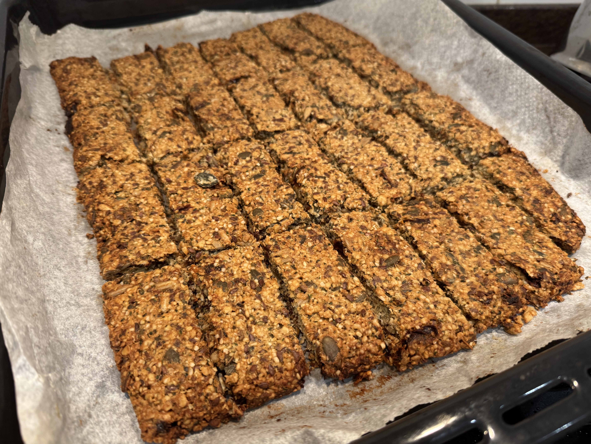
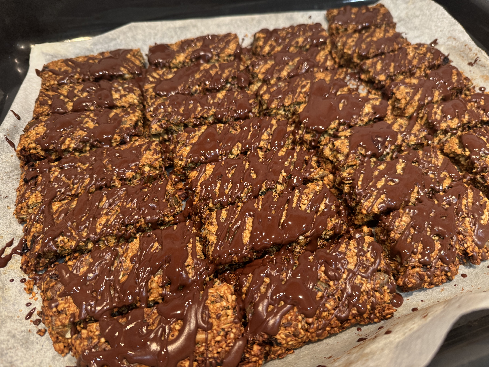
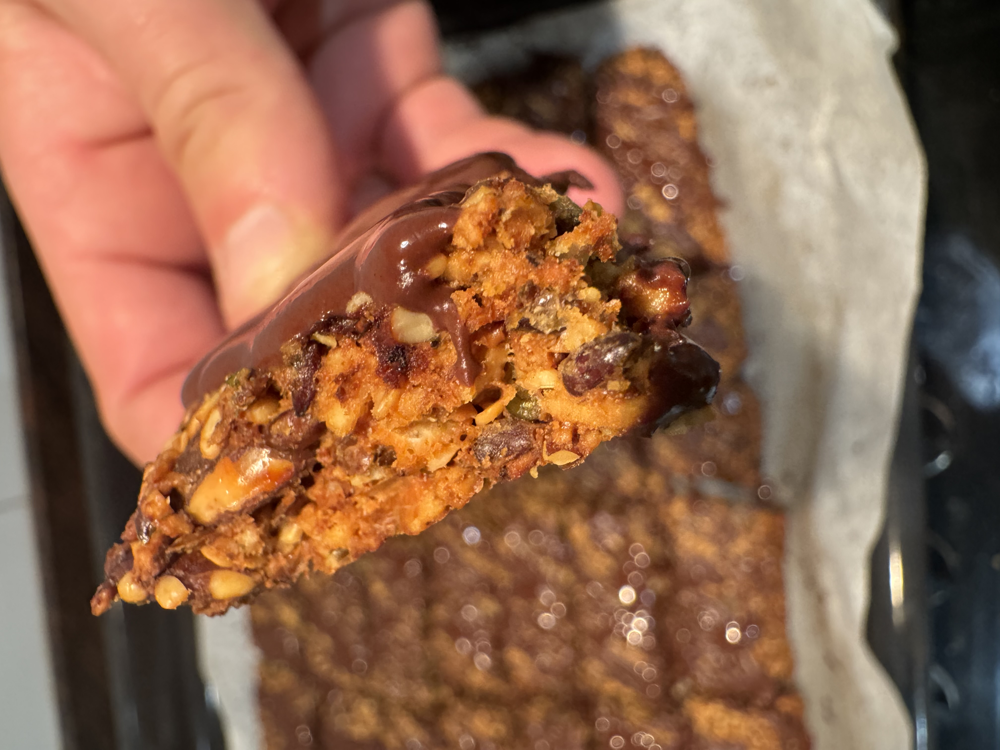
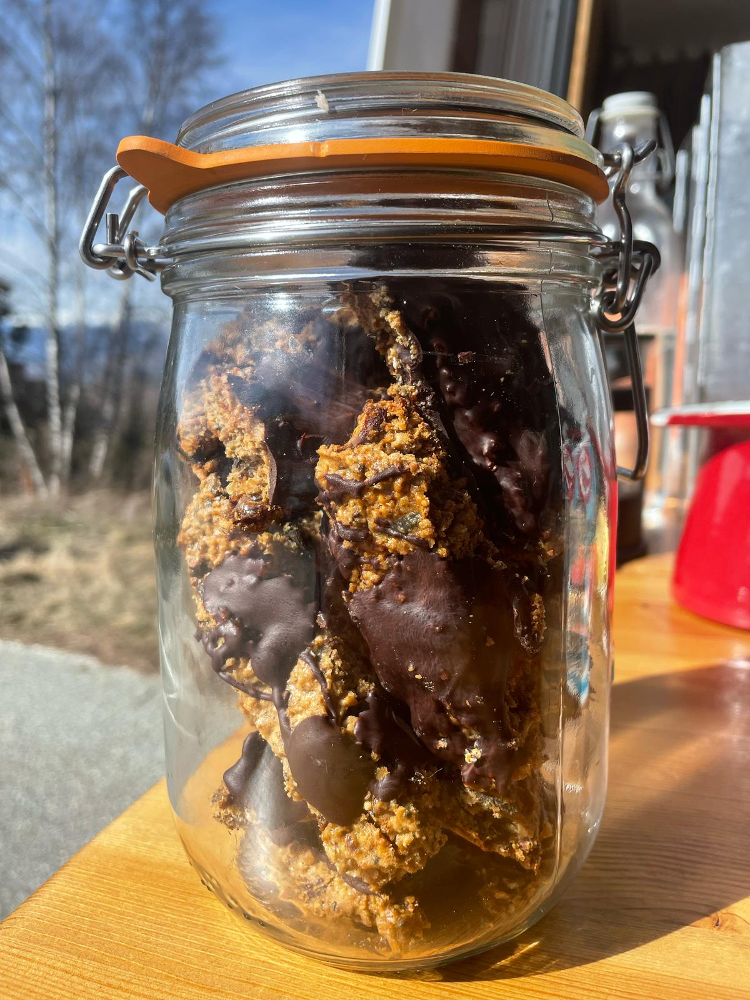

Barres aux dattes
Ingredients
×
- 200 g de flocons d'avoine
- 150 g de courge
- 80 ml d'huile de coco
- 80 ml de tahin
- 125 ml de sirop d'érable
- 1 cac de vanille
- 3 blancs d'oeufs
- 30 g de graines de tournesol
- 4 cas de graines de lin
- 4 cas de graines de chanvre
- 2 cas de sésame
- 50 g de coco râpée
- 10 dattes medjool
- 0.5 cac de sel
- chocolat noir
Préparation
Étape 1
Mélanger 200 g de flocons d'avoine, 150 g de courge, 80 ml d'huile de coco, 80 ml de tahin, 125 ml de sirop d'érable, 1 cac de vanille, 3 blancs d'oeufs, 30 g de graines de tournesol, 4 cas de graines de lin, 4 cas de graines de chanvre, 2 cas de sésame, 50 g de coco râpée, 10 dattes medjool et 0.5 cac de sel.
Étape 2
Enfourner à 150ºC pendant 40min.
Étape 3
Laisser refroidir, puis former les barres.
Étape 4
Remettre au four 20min.
Étape 5
Napper de chocolat noir fondu avec un peu d’huile de coco.




